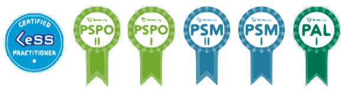

Agile Coach / Scrum Master
Agile practitioner, since 2011 associated with the IT industry. Supporting organizations in achieving agility by building it around self-managing teams focused on delivering business value. Błażej gained his experience in small and large companies where he participated in agile transformation, defining new roles, structures and ways of working.
He has a number of original training projects related to the development of competences in building an agile organization. He conducts trainings in the following areas: Product Management, Agile Leadership, Agile Organisation,Agile Culture, Extreme programming, Recruiting & OnBoarding, Agile HR. Speaker at the Motorola Agile Swarming 2019 conference, IT Academic Days conference, lecture for students of AGH University of Science and Technology, MeetUp ALE Krakow, MeetUp NovoTalks; Web Academy webinar. Author of articles on Agile.
Certified LeSS practitioner, Scrum Master, Product Owner, Agile Leader and programmer (CLP, PSM II, PSM I, PSPO II, PSPO I, PAL I, C ++ 03 Expert). A graduate of the School of Trainers at the Wszechnica UJ Krakow. An enthusiast of Turquoise Organizations, Large Scale Scrum (LeSS), Management 3.0, Impact Mapping, and #NoEstimate movement.
